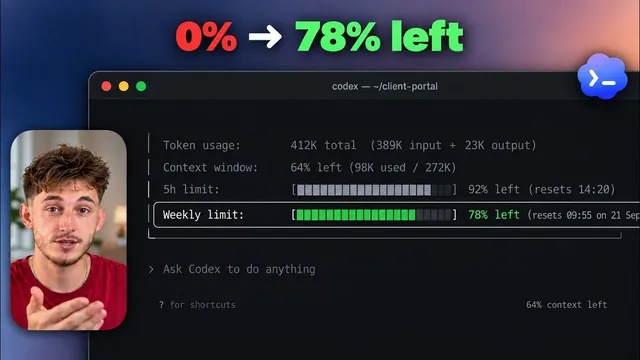

Codex 사용량 한도, 두 번 다시 안 터뜨리는 법

원본 영상 보기 →
- 채팅 길이가 곧 비용이에요
- 비싼 모델은 어려운 일 전용으로 쓰세요
- '아끼는 기능'이 오히려 토큰을 태울 수 있어요
한 줄 요약
Nick Puru가 Codex 사용량 한도를 훨씬 오래 쓰는 방법을 정리했어요. 사용량을 눈으로 확인하고, 작업에 맞는 작은 모델을 고르고, 채팅을 새로 열고, 프롬프트를 구체적으로 쓰는 게 핵심입니다. 그리고 "서브에이전트로 아끼라"는 흔한 조언은 오히려 토큰을 더 태울 수 있다고 해요.
전체 내용 정리
사용량 막대는 메시지 수가 아니라 토큰 수예요
토큰은 대략 단어의 4분의 3쯤 되는 텍스트 조각입니다.
Codex는 프롬프트뿐 아니라 여는 모든 파일, 채팅에 출력되는 내용, 답변까지 전부 토큰으로 읽고 써요. 그래서 짧은 메시지 하나에 Codex가 파일 10개를 열면 막대가 확 오르고, 긴 메시지를 보내도 별 작업이 없으면 거의 안 움직입니다.
Nick은 자기 계정이 남은 사용량 0%에 주간 한도 초기화가 3일 뒤인 상태였다고 보여 줘요.
채팅은 쌓이는 종이 뭉치예요
Nick의 비유가 좋습니다. 채팅은 책상 위에 쌓이는 종이 뭉치라고요.
메시지를 보낼 때마다 새 페이지 한 장이 아니라, 그때까지 쌓인 종이 뭉치 전체를 다시 읽습니다. 그래서 아침부터 열어 둔 채팅은 문제가 어려워진 것도 아닌데 메시지 한 통당 비용이 더 들어요.
엔진도 변수입니다. 가장 강력한 Astra는 OpenAI 요금표상 미드 엔진 프로모션 가격의 두 배 반이에요.
먼저 무료로 사용량을 확인하세요
세 가지 방법이 있습니다.
첫째, 설정의 '사용량 및 청구'. 남은 한도, 만료 시점, 남은 무료 초기화 횟수, 그리고 어떤 채팅이 토큰을 많이 썼는지 보이는 분석 화면이 여기 있어요.
둘째, 일반 설정에서 '컨텍스트 창 사용량 표시'를 켜기. 기본은 꺼져 있습니다. 켜면 작성창 옆에 "258,000개 중 140,000개(54%)"처럼 종이 뭉치 높이가 보여요.
셋째, 무료 추적 도구. 컴퓨터에 있는 Codex 로그를 읽어서 일별·모델별·세션별 토큰 사용량을 표로 보여 줍니다. 표의 달러 금액은 API 가격 기준 추정치라 실제 구독 요금과는 무관하니 토큰 수만 보면 돼요.
어려운 일만 Astra에게 맡기세요
Nick은 예전에 파일 이름 변경, 목록 정리, 커밋 메시지까지 전부 가장 비싼 Astra에 맡겼다고 인정합니다.
지금은 까다로운 버그나 추론이 필요한 일만 Astra에 맡기고, 나머지는 Terra, Soul, Luna 같은 하위 모델로 처리해요. 요금표상 Luna는 Astra 토큰의 약 50분의 1, Terra는 약 5분의 1 값입니다.
Codex가 자동으로 모델을 골라 주지 않으니 드롭다운에서 직접 골라야 해요.
설정은 처음에 정하고 함부로 올리지 마세요
노력 수준 슬라이더는 라이트부터 울트라까지 있습니다.
라이트가 나쁜 설정은 아니에요. 다만 한 번에 완료되지 못해서 다시 돌리면 중간이나 높음보다 토큰이 두 배쯤 더 듭니다.
중간에 수준을 바꾸는 것도 공짜가 아니에요. 다음 메시지에서 전체 스택을 다시 읽는 비용이 그대로 청구됩니다.
빠른 모드는 일반 모드보다 토큰을 약 2.5배 쓰니 급한 일이 아니면 꺼 두세요. 울트라는 Astra에게 최대 사고 능력을 주고 일부를 함께 도는 하위 에이전트에 맡기기 때문에 한도를 훨씬 빨리 태웁니다.
새 작업은 새 채팅에서, 대신 기록 파일을 남기세요
새 광고 만들기나 스프레드시트 업데이트처럼 새 일은 별도 채팅에서 시작해야 합니다.
다만 새 채팅도 처음부터 다시 설정해야 하니 공짜는 아니에요. 그래서 Nick은 프로젝트 안에 파일 하나를 두고, 작업이 끝날 때마다 "끝낸 일과 다음에 할 일"을 기록해 둡니다. 다음 날 새 채팅에 그 파일을 연결하면 끊긴 지점부터 이어져요.
참고로 Codex는 채팅이 가득 차면 자동으로 압축하는데, 이 압축도 별도 요청이라 비용이 듭니다. 작업 중 한도를 넘어도 계속된다고 OpenAI가 밝혔지만 실제로는 중간에 멈추는 경우가 많으니, 완료를 기대하지 않는 편이 나아요.
안 쓰는 기능은 꺼 두세요
- MCP 서버는 쓸 때마다 메시지에 컨텍스트를 더하고 한도를 더 씁니다.
- 스킬은 호출될 때만 본문이 로드되고 평소에는 이름만 보여서 하나씩 쓰면 저렴해요. 다만 50개를 묶어 쓰면 비싸집니다.
- 이미지를 쓰는 작업은 OpenAI에 따르면 이미지 없는 작업보다 평균 3~5배 토큰을 씁니다.
- 예약 작업과 코드 리뷰도 토큰을 쓰니 아주 가벼운 모델로 돌리세요.
프롬프트에 경로·증상·기대 결과를 한 줄로 담으세요
"가격 페이지 버튼이 안 돼, 고쳐 줘"처럼 모호하게 시키면 AI가 원인을 찾느라 관계없는 파일까지 열고 읽습니다. 그 내용은 채팅에 남아서 이후 모든 메시지에 덧붙어요.
반면 이렇게 쓰면 한 줄이어도 정보가 충분합니다.
가격 페이지에서 세 요금제 버튼을 눌러도 반응이 없다, 결제 페이지가 열려야 한다, 파일은 이 컴포넌트 폴더에 있다, 고치고 뭐가 문제였는지 한 줄로 설명해.
출력 토큰은 입력 토큰의 5배 값이에요. 방금 한 일을 길게 설명하는 단락에 가장 비싼 요금을 내는 셈입니다. OpenAI도 파일 이름을 지정하고 출력은 짧게 요청하라고 권해요.
서브에이전트가 오히려 비쌀 수 있어요
"싼 서브에이전트에게 맡겨 사용량을 90% 줄이라"는 조언이 흔합니다. 그런데 OpenAI 문서에도 서브에이전트는 같은 작업을 하는 단일 에이전트보다 토큰을 더 쓴다고 나와 있어요.
Nick이 세션 로그를 열어 봤더니, 메인 모델이 30초마다 47번 서브에이전트를 부르며 그때마다 약 15만 토큰을 썼습니다. 5시간 한도가 절반에서 30분 만에 0이 됐어요.
서브에이전트 자체는 쌉니다. 그 위의 Astra가 체크인할 때마다 종이 뭉치 전체를 다시 읽는 게 진짜 비용이었어요.
남은 무료 초기화 횟수를 확인하세요
사용량이 0이면 설정의 사용량 및 청구에서 '사용량 제한 초기화'가 남았는지 보세요. 이 초기화는 만료되거든요. Nick은 자기 것이 10월 22일까지라고 보여 줍니다.
결론은 이렇습니다. 더 큰 요금제가 꼭 필요한 게 아니라, 가진 한도를 낭비하지 않는 것이에요. 간단한 일은 작은 모델로, 채팅은 깔끔하게, 안 쓰는 기능은 끄고, Codex에게 필요한 정보를 미리 주면 한도가 24시간 만에 바닥나느냐 7일, 14일을 가느냐가 갈립니다.
핵심 인사이트
- 채팅 길이가 곧 비용이에요: 한 채팅이 길어질수록 매 메시지가 전체 대화를 다시 읽어서 비싸집니다. 새 작업은 새 채팅으로 나누되 인계용 기록 파일을 남기면 손실이 적어요.
- 비싼 모델은 어려운 일 전용으로 쓰세요: 파일 정리나 커밋 메시지 같은 반복 작업까지 최상위 모델에 맡기면 한도가 가장 먼저 샙니다. 요금표상 하위 모델은 최대 50분의 1 값이에요.
- '아끼는 기능'이 오히려 토큰을 태울 수 있어요: 서브에이전트는 저렴해 보여도 본체가 계속 체크인하면 한도를 훨씬 빨리 씁니다. 로그로 직접 확인하기 전까지는 조언을 그대로 믿으면 안 돼요.
오늘 당장 해볼 것
- Codex 설정의 '사용량 및 청구'에 들어가 남은 한도, 만료 시점, 남은 초기화 횟수를 확인해 보세요. 안 쓰고 날리는 초기화가 있을 수 있습니다.
- 일반 설정에서 '컨텍스트 창 사용량 표시'를 켜고, 지금 열려 있는 가장 긴 채팅이 몇 %를 쓰는지 보세요. 숫자로 보면 새 채팅을 여는 습관이 생깁니다.
- 빠른 모드와 울트라, 안 쓰는 플러그인·MCP를 꺼 두고, 다음 요청부터 "파일 경로, 증상, 기대 결과, 짧게 답해"를 한 줄에 담아 시켜 보세요.